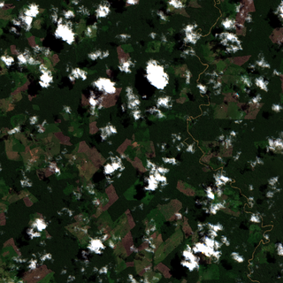

—
Temporal Change — 2020 → 2025
→
→
16 training tiles and 5 test tiles across three tropical forest regions — click markers to inspect
Browse all satellite tiles — click any card to see modalities, NDVI time series, and labels
True-color composites from each year showing land cover change

Alert density across training tiles from three independent label sources
| Source | Type | Bands | Resolution | Temporal | Format | CRS |
|---|---|---|---|---|---|---|
| Sentinel-2 | Optical | 12 spectral | 10 m/px | Monthly (72) | GeoTIFF uint16 | Local UTM |
| Sentinel-1 | Radar (SAR) | 1 (VV) | ~30 m/px | Monthly (~96) | GeoTIFF float32 | Local UTM |
| AEF Embeddings | Foundation | 64 latent | 10 m/px | Annual (6) | GeoTIFF float32 | EPSG:4326 |
| RADD | Label (radar) | 1 | 10 m/px | Cumulative | GeoTIFF uint32 | EPSG:4326 |
| GLAD-L | Label (Landsat) | 2/year | 30 m/px | Annual (5) | GeoTIFF uint8/16 | EPSG:4326 |
| GLAD-S2 | Label (Sentinel) | 2 | 10 m/px | Cumulative | GeoTIFF uint8/16 | EPSG:4326 |
| Band | Name | λ (nm) | Primary Use |
|---|---|---|---|
| B01 | Aerosol | 443 | Atmospheric correction |
| B02 | Blue | 490 | Soil / vegetation |
| B03 | Green | 560 | Vegetation vigor |
| B04 | Red | 665 | Chlorophyll absorption |
| B05 | Red Edge 1 | 705 | Vegetation classification |
| B06 | Red Edge 2 | 740 | Leaf area index |
| B07 | Red Edge 3 | 783 | Canopy structure |
| B08 | NIR | 842 | Biomass / NDVI |
| B8A | Narrow NIR | 865 | Water vapor ref. |
| B09 | Water Vapor | 945 | Atmospheric water |
| B10 | Cirrus | 1375 | Cloud detection |
| B11 | SWIR-1 | 1610 | Moisture / burn scars |
| B12 | SWIR-2 | 2190 | Geology / moisture |